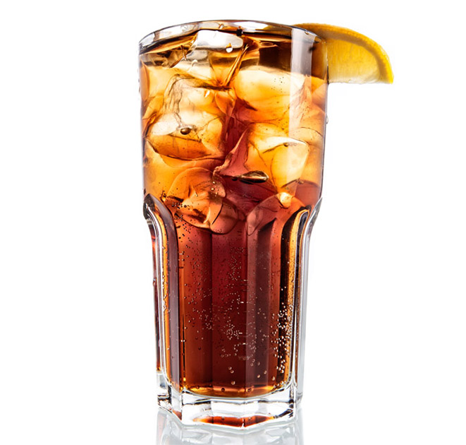

<md-dialog aria-label="New order" class="neworder md-block" flex="60" ng-cloak>
  <form>
    <md-toolbar>
      <div class="md-toolbar-tools">
        <h2>Лонг Айленд Айс Ти</h2>
        <span flex></span>
        <md-button class="md-icon-button" ng-click="cancel()" aria-label="close">
          <ng-md-icon icon="close" size="24" style="fill: white"></ng-md-icon>
        </md-button>
      </div>
    </md-toolbar>
    <md-dialog-content>
      <md-content class="md-padding min">
        <div layout-gt-sm="row">
          <div class="image-kokt">
            
          </div>
          <div flex="10"></div>
          <ul class="list-group md-block" flex>
            <li class="list-group-item list-group-item-info">Составляющие:</li>
            <li class="list-group-item">
              <span class="badge">20</span> Водка
            </li>
            <li class="list-group-item">
              <span class="badge">20</span> Ром
            </li>
            <li class="list-group-item">
              <span class="badge">20</span> Джин
            </li>
            <li class="list-group-item">
              <span class="badge">20</span> Трипл Сек
            </li>
            <li class="list-group-item">
              <span class="badge">20</span> Текила
            </li>
            <li class="list-group-item">
              <span class="badge">150</span> Кола
            </li>
          </ul>
        </div>
        <div class="zag_kokt">
          <span>Описание:</span> Коктейль «Лонг Айленд Айс Ти» (Long Island Ice Tea) был придуман во времена запрета на алкоголь. Этот коктейль употребляли в чайных чашках, потому что он был похож на холодный чай («айс ти»). Был похож не только внешним
          видом, но и запахом. Таким образом, жители США и журнал «Космополитен» не давали понять ФБР, что они пьют на самом деле.
        </div>

        <div class="zag_kokt">
          <span>Коментарий:</span> Кароче колу не лей в шейкер.
        </div>
        </div>
      </md-content>
    </md-dialog-content>
  </form>
</md-dialog>
